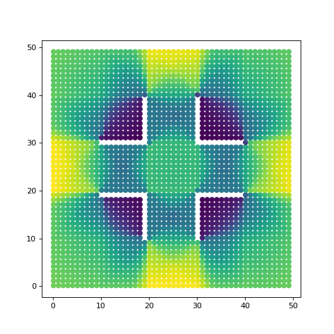
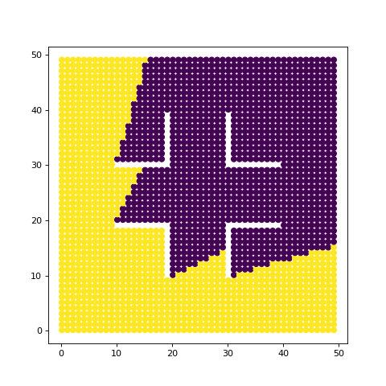

Visibility Graph Grouping¶
First we setup the graph generator as seen in other examples.
import matplotlib.pyplot as plt
from mpl_toolkits.mplot3d import Axes3D
from dhart.geometry import LoadOBJ
from dhart.raytracer import EmbreeBVH
from dhart.graphgenerator import GenerateGraph
from dhart.visibilitygraph import VisibilityGraphAllToAll, VisibilityGraphGroupToGroup
import dhart as hfpy
# Get a sample model path
obj_path = hfpy.get_sample_model("VisibilityTestCases.obj")
# Load the obj file
obj = LoadOBJ(obj_path)
# Create a BVH
bvh = EmbreeBVH(obj, True)
# Set the graph parameters
# Test examples are failing on 1. Seems to be embree failing on edge intersection
start_point = (1.1 , 1.1, 20) #offset X by 60 for each new model
spacing = (1, 1, 5)
max_nodes = 10000
up_step, down_step = 0.1, 0.1
up_slope, down_slope = 1, 1
max_step_connections = 1
# Generate the Graph
graph = GenerateGraph(bvh, start_point, spacing, max_nodes,
up_step,up_slope,down_step,down_slope,
max_step_connections, cores=-1)
After the graph is generated, we pull out the nodes to use for visibility checks. First we claculate the AllToAll method that is compared later to the same groups.
# Get the nodes of the graph as a list of x,y,z,type,id tuples
nodes = graph.getNodes()
print(len(nodes))
height = 1.7 # Set a height offset to cast rays from the points
VG = VisibilityGraphAllToAll(bvh, nodes, height) # Calculate the visibility graph
visibility_graph = VG.CompressToCSR() # Convert to a CSR (matrix)
scores = VG.AggregateEdgeCosts(2, True) # Aggregate the visibility graph scores
# Plot the graph using visibility graph as the colors
fig = plt.figure(figsize=(6,6))
plt.scatter(nodes['x'], nodes['y'], c=scores)
plt.show()

In the above, we use the all to all method of the graph. This is equal to using two groups that are both the graph.
VG = VisibilityGraphGroupToGroup(bvh, nodes, nodes, height) # Calculate the visibility graph
visibility_graph = VG.CompressToCSR() # Convert to a CSR (matrix)
scores = VG.AggregateEdgeCosts(2, True) # Aggregate the visibility graph scores
# Plot the graph using visibility graph as the colors
fig = plt.figure(figsize=(6,6))
plt.scatter(nodes['x'], nodes['y'], c=scores)
plt.show()

Next we can check a single point and how it compares. In this case, we want to get the score for all of the nodes that connect TO a point. For clarity, we visualize this as just the number of edge connections, which when given a single point, will be either 0 or 1.
VG = VisibilityGraphGroupToGroup(bvh, nodes, [nodes[0]], height) # Calculate the visibility graph
visibility_graph = VG.CompressToCSR() # Convert to a CSR (matrix)
scores = VG.AggregateEdgeCosts(2, True) # Aggregate the visibility graph scores
# Plot the graph using visibility graph as the colors
fig = plt.figure(figsize=(6,6))
plt.scatter(nodes['x'], nodes['y'], c=scores)
plt.show()

We repeat this process, but now including the first 100 nodes. This is approx. the bottom left 10x10 square.
VG = VisibilityGraphGroupToGroup(bvh, nodes, nodes[0:100], height) # Calculate the visibility graph
visibility_graph = VG.CompressToCSR() # Convert to a CSR (matrix)
scores = VG.AggregateEdgeCosts(2, True) # Aggregate the visibility graph scores
# Plot the graph using visibility graph as the colors
fig = plt.figure(figsize=(6,6))
plt.scatter(nodes['x'], nodes['y'], c=scores)
plt.show()